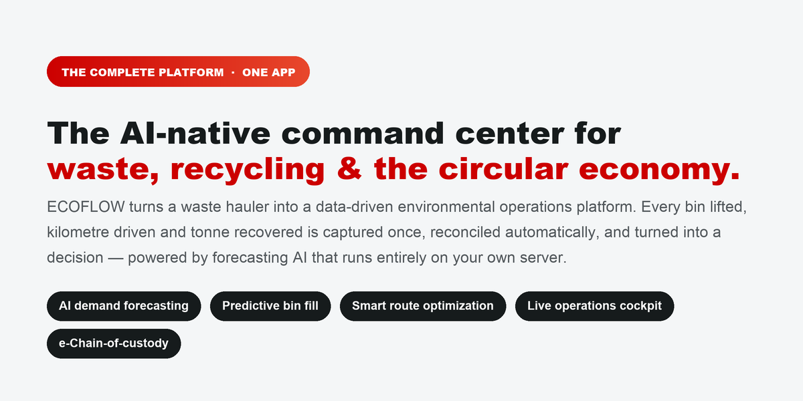
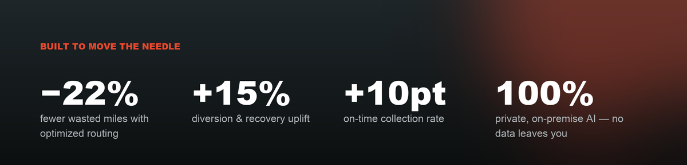
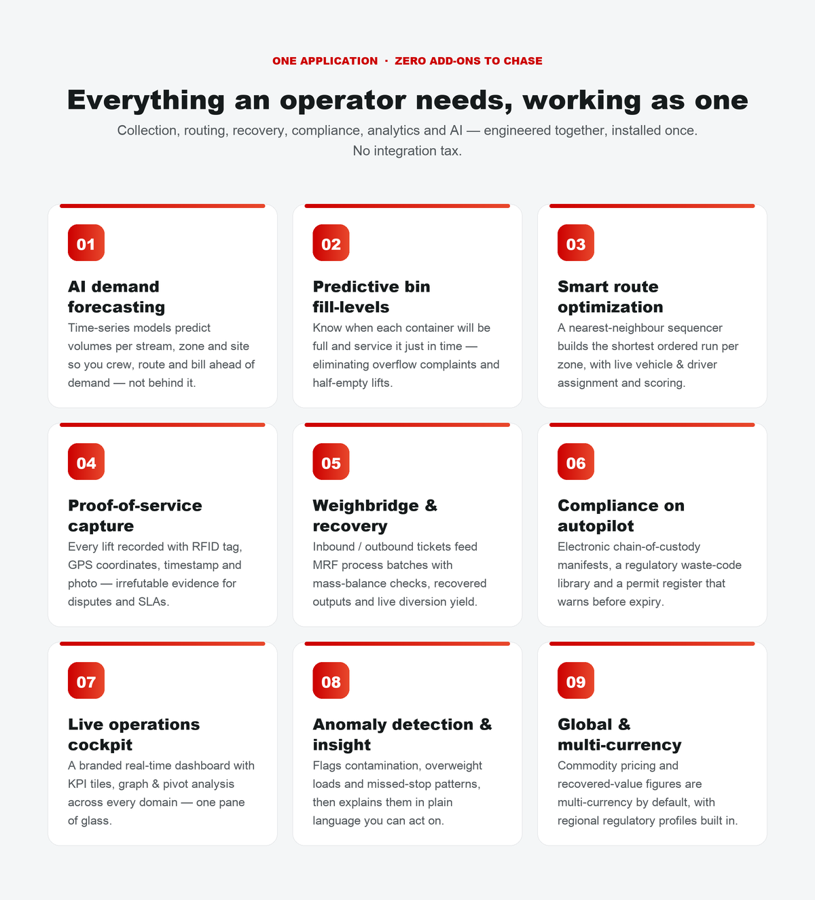
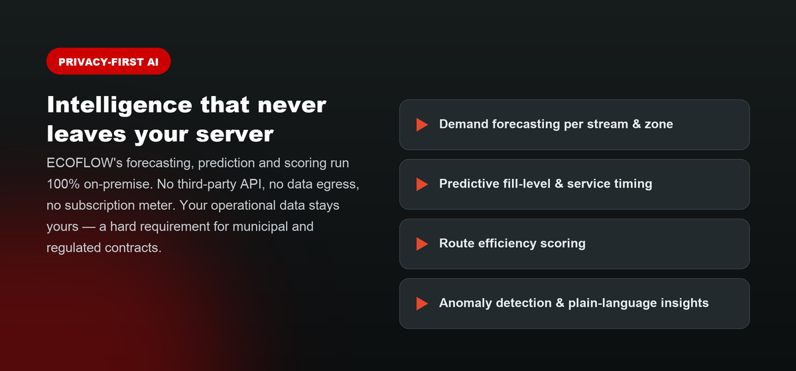
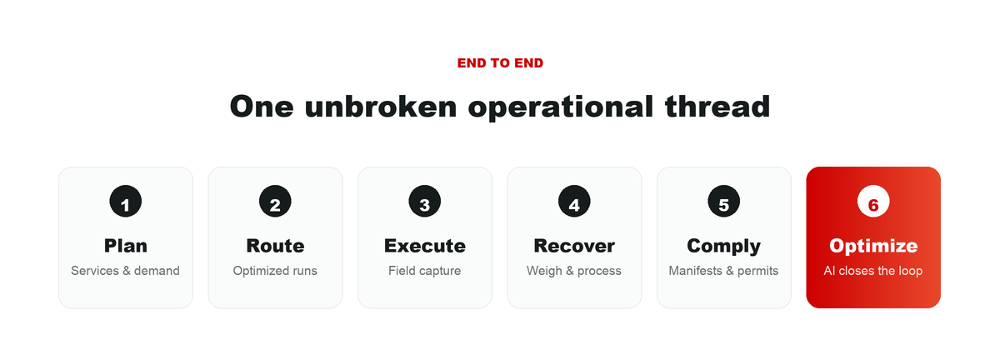
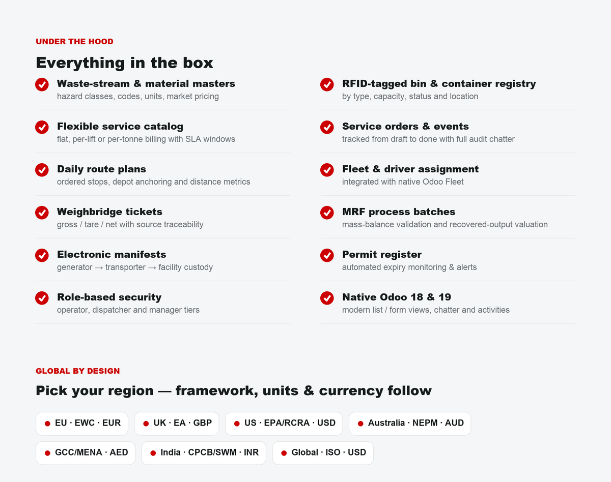
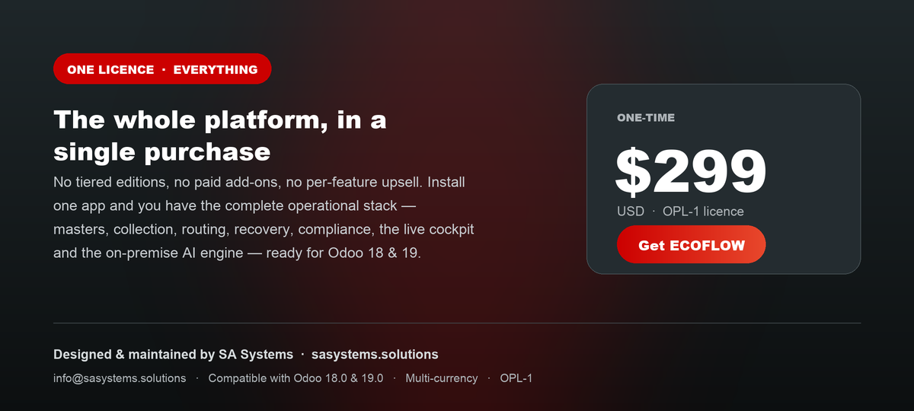

ECOFLOW is a single, complete environmental operations platform for waste, recycling and the circular economy —
masters, collection, routing, recovery, compliance, a live analytics cockpit and an on-premise AI engine in one app,
ready for Odoo 18.0 & 19.0, multi-currency and region-aware.
Designed & maintained by SA Systems.
Visit sasystems.solutions
·
info@sasystems.solutions